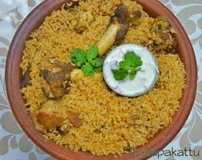

Favorite recipes
some special dishes
Veg-Recipes
Here are some of us for whom a good meal almost always means a meaty affair. we've got a best veg recipes that you can make at home.
There are some of us for whom a good meal almost always means a meaty affair. With so many varied kinds of non-vegetarian dishes, one is sure to be bowled over with lip-smacking flavours. Look within the Indian sub-continent
and you have unique preparations using local regions of the region.
Non-veg recipes
Non-Vegetarian Recipes- There are some of us for whom a good meal almost always means a meaty affair.
With so many varied kinds of non-vegetarian dishes, one is sure to be bowled over with lip-smacking flavours. Look within the Indian sub-continent and you have unique preparations using local regions of the region. Imagine biting into Malabar fish curry, Mangalore chicken curry, Goan masala prawns, Kosha Mangsho,
butter chicken, Laal Maas, Amritsari fish and Rogan Josh to name a few. Turning to International cuisines, there are many more dishes to add to the indulgence. Some of those dishes are so popular that you commonly find food fanatics dishing them out at the comfort of their kitchen.
Fish and chips, steaks, barbecued pork ribs, grilled chicken, meatballs, - you name it! There is no end to the delectable non vegetarian dishes that you can enjoy to your heart's content.


The best drink in existence, from "Hitchhiker's Guide to the Galaxy"
An intricate and dangerous cocktail, invented by Zaphod Beeblebrox.
Purported to make you feel like "having your brains smashed out by a slice of lemon wrapped round a large gold brick".
Ingredients
- Old Janx Spirit (1 bottle)
- Sea water from Santraginus V (1 measure)
- Acturan Mega-gin cubes (3 cubes)
- Fallian marsh gas (4 liters)
- Qualactin Hypermint extract (1 teaspoon)
- Angolian Suntiger tooth
- Zamphuor
- Olive (1 oliv)
Recipe instructions (taken from the book)
- Take the juice from one bottle of Ol' Janx Spirit.
- Pour into it one measure of water from the seas of Santraginus V — Oh, that Santraginean seawater! Oh, those
Santraginean fish!
- Allow three cubes of Arcturan Mega-gin to melt into the mixture (it must be properly iced or the benzene is lost).
- Allow four litres of Fallian marsh gas to bubble through it, in memory of all those happy hikers who have died of
pleasure in the Marshes of Fallia.
- Over the back of a silver spoon float a measure of Qualactin Hypermint extract, redolent of all the heady odours of the
dark Qualactin Zones, subtle, sweet and mystic.
- Drop in the tooth of an Algolian Suntiger. Watch it dissolve, spreading the fires of the Algolian Suns deep into the
heart of the drink.
- Sprinkle Zamphuor.
- Add an olive.
- Drink... but... very carefully...
Return to top
Return to main page